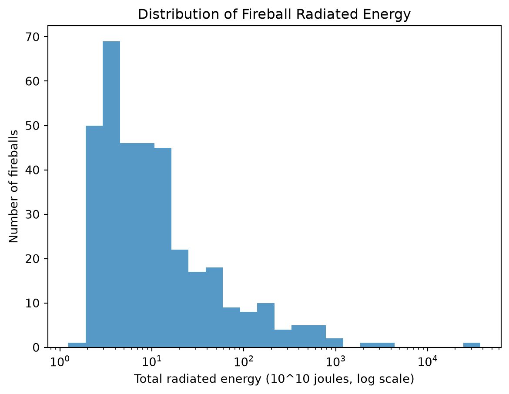
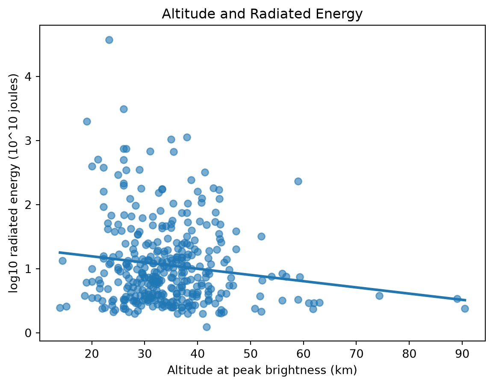
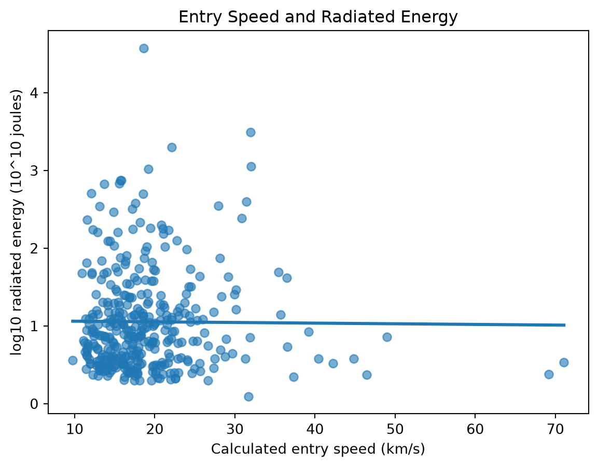

| count | missing | median | IQR | min | max | |
|---|---|---|---|---|---|---|
| energy | 360.0 | 0 | 7.560000 | 16.525000 | 1.240000 | 37500.000000 |
| alt | 360.0 | 0 | 33.300000 | 9.950000 | 14.000000 | 90.500000 |
| speed | 360.0 | 0 | 17.442334 | 6.689806 | 9.765756 | 71.071373 |
Fireball Brightness
AJ Lapicola
Introduction
Many of us have seen flashes of light streak across the sky, only to vanish in seconds. What we often call “shoooting stars” are in fact, meators. Most meteors are faint, but some blaze so brightly that they’re called fireballs. They begin as small pieces of rock or metal traveling through space; when they plunge into Earth’s atmosphere, they heat the surrounding air and shed material, creating a brilliant glow. NASA’s CNEOS database collects reports of some of these events, offering a glimpse of a dramatic process that usually lasts only moments.
I’m curious about what these records can tell us about a fireball’s passage through the atmosphere. In particular, I want to explore whether altitude at peak brightness and entry speed are associated with how much energy a fireball radiates. Looking at these characteristics could help me better understand what more energetic fireballs have in common.
How are factors like altitude at peak brightness, entry speed, location, and others associated with the radiated energy of a fireball?
Responsible Data Collection
I will collect the data through the official NASA/JPL CNEOS Fireball Data API and follow JPL’s Fair Use Policy. As such, I will make only the requests needed for my project, send one request at a time, and save the results so I can reuse them rather than repeatedly requesting the same data. My script will include an application-specific User-Agent with its name, version, and contact information, and will handle errors by backing off before retrying. I will also check the API version in each response. The records describe fireball events and do not contain personal information.
Data Collection
To collect the fireball records, I used Python’s requests library to send a GET request to NASA/JPL’s CNEOS Fireball Data API. I included parameters requiring records to have location, altitude, and entry velocity components, and requested the velocity fields. After checking the response for HTTP errors, I converted its JSON content into a pandas DataFrame, using the API’s fields list as column names. I saved this initial version as a CSV file in data/raw, preserving a copy of the data before cleaning.
To prepare the data for analysis, I read the CSV back into pandas, converted the date column to datetime format, and converted the latitude, longitude, altitude, energy, impact energy, and velocity columns to numeric values. Someone following a similar process can adjust the API parameters, retrieve JSON records, and convert them into a structured dataset for exploration.
Exploration Highlights
The dataset contains 360 fireball records and 13 columns. The three numeric variables used in this analysis, radiated energy, altitude, and calculated speed, have no missing values.
Summary Table
Radiated energy has a median of 7.56 × 10¹⁰ joules and an interquartile range of 16.525 × 10¹⁰ joules. Its values range from 1.24 × 10¹⁰ to 37,500 × 10¹⁰ joules. Altitude at peak brightness has a median of 33.3 km and ranges from 14 to 90.5 km. Calculated entry speed has a median of about 17.44 km/s, with a range of about 9.77 to 71.07 km/s.
Radiated Energy Distribution
The energy histogram shows a strongly right-skewed distribution. Most recorded fireballs fall toward the lower end of the energy range, while a small number have much larger energy estimates, creating a long tail. The median being far below the maximum reflects this spread: a few very high-energy events are quite different from the typical record. A logarithmic scale makes both the concentration of lower-energy observations and the extreme values easier to see.

Looking for Patterns
The altitude plot shows a slight downward trend: fireballs that reach peak brightness at higher altitudes tend to have lower estimated radiated energy in this sample. However, the points are widely scattered around the line. Events at similar altitudes can have quite different energy estimates, so altitude alone does not closely predict a fireball’s energy.

The speed plot has an almost horizontal trend line, suggesting little clear linear association between calculated entry speed and radiated energy. Most recorded speeds cluster between roughly 10 and 30 km/s, but energy varies widely within that range. The fastest events are not necessarily the most energetic, and the most energetic observation occurs at a more moderate speed.

Overall, altitude shows a weak negative pattern with radiated energy, while speed shows no obvious linear pattern. These plots describe associations in the 360 records analyzed; they do not establish that altitude or speed causes a fireball to release more energy.
A fireball lasts only a moment, but the data let us look back after the flash is gone. Each record captures a few details of that brief event: where it reached peak brightness, how fast it was moving, and how much energy it radiated. Exploring those details didn’t lead to one simple explanation, but it did turn a list of detections into a closer look at events that are usually over before we can take them in.
Further Resources
For more information on Fireballs checkout the CNEOS webpage for an overview and introduction: CNEOS Fireballs overview and data
If you are interested in checking out the data for yourself, go to the Fireball Data API documentation page to learn more: Fireball Data API documentation
The detailed steps of my analysis can be viewed here: Github Repo
Thanks for reading!